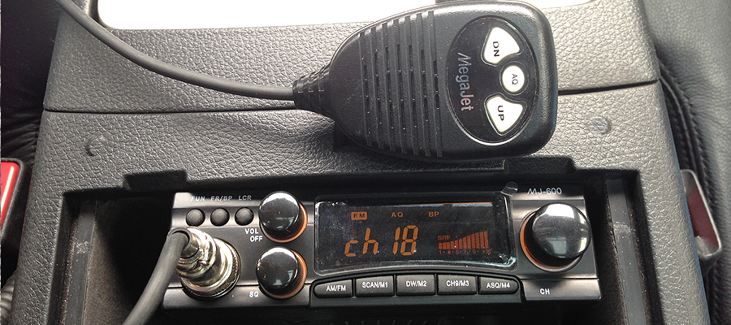

Когда я установил в машину пару лет назад радиостанцию и установил на крышу двухметровую антенну, брат сказал, что машина стала похожа на прокурорскую «Волгу». Радиостанцию я купил перед экспедицией по России в 2012 году. Хотелось слушать в дороге дальнобойщиков, но по существу это было сделать сложно — в машине постоянно спала полугодовалая дочка, а дальнобойщики — громкие парни, которые, к тому же, ругаются матом хлеще некоторых блогеров.
Рацию я покупал в компании Рател, на Спортивной, 28. Выбрал MegaJet MJ-600 — стандартная радиостанция «из коробки», оснащённая шумоподавителем. Включать шумоподавитель и переключать каналы можно на тангенте, что, говорят, тоже плюс. Антенну для радиостанции лучше всего устанавливать по центру металлической крыши. Таким образом сама крыша будет являться отражателем, но крыша на нашей машине стеклянная. Ещё лучше врезать антенну «в массу» автомобиля, но сверлить кузов желания тоже, конечно, не было. Остался вариант с магнитной двухметровой антенной, которую я и примагнитил в задней части крыши, на металлический элемент (предварительно наклеив кусок чёрной самоклейки, чтобы кузов под магнитом не царапался). Саму радиостанцию не рекомендуется подключать через твой любимый прикуриватель, поэтому я завёл в салон для неё отдельное питание.
С 2011 года в России радиостанции мощностью менее 10 Вт не подлежат регистрации.

CB-радиостанция, установленная на автомобиле, позволяет общаться, в условиях города, на расстоянии до нескольких километров, а за его пределами это расстояние может превысить и десяток. Есть много факторов, и мощность станций и качество антенн, но знаниями в физике похвастать не могу, поэтому буду описывать впечатления как потребитель.
У 27 канала есть сайт. На сайте есть много полезной информации для тех, кто тоже хочет быть в эфире
В городе Кемерово есть два канала, на которых «сидят» автомобилисты. Это 18-й канал и 27-й. 18 канал больше для общения, порой чересчур неформального, 27 — позиционируется как канал взаимопомощи, именно на нём водители сообщают о пробках, о занятых полосах, рассказывают о ДТП, установленных камерах и ГИБДД. На 27-м канале иногда присутствует неформальное общение, но мат не приветствуется. Каждый, кто выходит в эфир, придумывает себе позывной. Есть и отец Сергий, и Константин, Гадкий Йа, Алька. В основном все общающиеся друг друга знают в оффлайне. Не знаю как сейчас, но в 2012 году каждый четверг они собирались на площади летнего вокзала. Но в эфир выходят, конечно, далеко не все. Большая часть обладателей радиостанция сидит молча и просто слушает.
На канале работает эхо-репитер. Это стационарная радиостанция, которая принимает сигнал и тут же повторяет его. Таким образом дальность радиосвязи увеличивается до нескольких раз, но, если вы находитесь недалеко от того, кто выходит в эфир, вы услышите собощение дважды.
В радиоэфире присутствует определённый сленг:
— «вошёл в канал», «вышел из канала» — на связи — «ребята, откройте дорожку до Елыкаево» — кто недавно ехал до Елыкаево, расскажите, есть ли пробки, ГИБДД, камеры — «на Тухачевского после поворота с Ленина работает машинка на пешеходов» — экипаж ГИБДД снимает водителей, которые не пропускают пешеходов
В эфире можно спросить совета, приезжающие из других городов также приветствуют кемеровчан в эфире.
В целом, эфир слушать интересно, хотя практическая польза, лично для меня, заключается только в возможности занять нужную полосу в случае пробки из-за ДТП впереди, что, в общем-то, редко.
За пределами города стоит переключиться на 15-й канал в АМ-модуляции. Именно на нём общаются дальнобойщики. На межгороде в эфире можно послушать, где какие пробки (в 15 километрах перевернулась фура с арбузами, стоять около часа), где кто вкусно поел, где стоит «машинка» или тренога и, конечно, о политике.
Если хочется пообщаться со знакомым на темы, которые будут неинтересны остальным, можно переключиться на соседний канал, но нужно понимать, что слушать вас будут всё равно все, кто переключиться с вами.
Внутри нашего небольшого города рация, на мой взгляд, скорее средство общения между знакомыми людьми, а вот на трассе это часто твои глаза, которые едут впереди машины на несколько километров.
Оставайтесь в эфире.